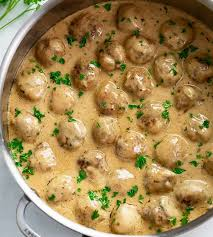

Meatballs

Description
These meatballs in sauce come together quickly for a fun dinner or potluck side.
Ingredients
Meatballs
- 1lb ground beef
- 1/4cup panko
- 1 egg
- seasonings to taste, I use parsley, nutmeg, onion, garlic, salt and pepper
Sauce
- 3TBSP butter
- 3TBSP flour
- 1 1/2cup beef broth
- 1/2cup milk
- worchestershire sauce or soy sauce
- mustard
Steps
- mix ground beef, panko, seasonings and egg together
- roll mixed beef into 1TBSP balls, set aside
- in a large pan, melt butter on low-medium heat
- slowly whisk in flour until combined and bubbly
- add beef broth and milk slowly to rue until mixed, turn to simmer
- add meatballs, worchestershire or soy sauce, and mustard to pan
- cover and simmer for 15-20 minutes
These meatballs are good on their own or over pasta, garnish with parsley for an elevated feel